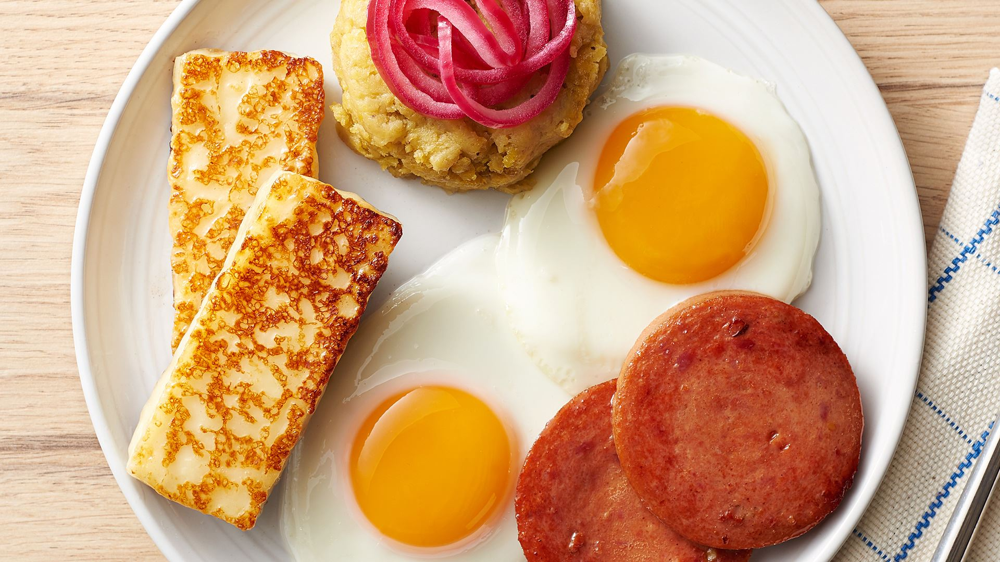

Mashed Platain with 3 Blows

Description
Mangu is a beloved and iconic Dominican dish made from mashed green plantains, typically served for breakfast or as a side dish. Its smooth and creamy texture, combined with its rich flavor, makes it a comforting and satisfying staple in Dominican cuisine.
Ingredients
- 4 green plantains
- Salt, to taste
- 1/4 cup of butter or olive oil
- Red onion, thinly sliced (optional, for topping)
- Queso Frito (fried cheese) or salami (optional, for topping)
Steps
- Start by selecting green, unripe plantains. They should be firm and have a green skin with no yellow or black spots.
Peel the plantains by cutting off the ends and making a lengthwise slit along the ridges of the plantains. Carefully peel off the skin.
- Cut the plantains into chunks, about 2-inch pieces. This will help them cook evenly.
- In a large pot, bring water to a boil. Add a pinch of salt to the water.
- Add the plantain chunks to the boiling water and cook for about 15-20 minutes, or until they are tender and easily pierced with a fork. The plantains will change from a bright green to a yellowish color.
- Once the plantains are cooked, carefully remove them from the water and drain.
- In a large bowl, use a fork or a masher to mash the plantains until smooth and creamy. Some people prefer a few lumps for texture.
- While mashing, add butter or olive oil to the plantains. Mix well until the fat is fully incorporated and the mangu is creamy.
- Season the mangu with salt to taste. Adjust the seasoning based on your preference.
- Serve the mangu hot, topped with thinly sliced red onions, queso frito (fried cheese), or slices of salami for added flavor and texture.
Serving
Mangu is often served as a side dish with fried cheese, eggs, or salami for breakfast. It can also accompany dishes like sautéed red onions, fried eggs, and fried Dominican cheese. Some variations include serving it with avocado, Dominican-style eggs (huevos a la Dominicana), or alongside other typical Dominican breakfast items. Enjoy this delicious and comforting Dominican staple that offers a unique blend of flavors and textures.